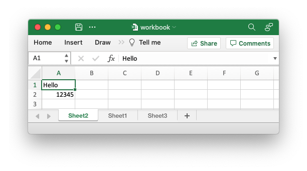

Creating worksheets
There are two way of creating a worksheet object with rust_xlsxwriter: via the
workbook.add_worksheet() method and via the Worksheet::new() constructor.
The first method ties the worksheet to the workbook object that will automatically write it when the file is saved, whereas the second method creates a worksheet that is independent of a workbook. The second method has certain advantages in keeping the worksheet free of the workbook borrow checking until needed, as explained below.
Working with add_worksheet() and the borrow checker
Due to borrow checking rules you can only have one active reference to a
worksheet object created by workbook.add_worksheet() since that method
always returns a mutable reference to an element of an internal vector.
For a workbook with multiple worksheets this restriction is generally workable if you can create and use the worksheets sequentially since you will only need to have one reference at any one time.
However, if you can’t structure your code to work sequentially then you get a
reference to a previously created worksheet using
workbook.worksheet_from_index(). The standard borrow checking rules still
apply so you will have to give up ownership of any other worksheet reference
prior to calling this method.
For example:
// SPDX-License-Identifier: MIT OR Apache-2.0
//
// Copyright 2022-2023, John McNamara, jmcnamara@cpan.org
//! The following example demonstrates getting worksheet reference by index.
use rust_xlsxwriter::{Workbook, XlsxError};
fn main() -> Result<(), XlsxError> {
let mut workbook = Workbook::new();
// Start with a reference to worksheet1.
let mut worksheet1 = workbook.add_worksheet();
worksheet1.write_string(0, 0, "Hello")?;
// If we don't try to use the workbook1 reference again we can switch to
// using a reference to worksheet2.
let mut worksheet2 = workbook.add_worksheet();
worksheet2.write_string(0, 0, "Hello")?;
// Stop using worksheet2 and move back to worksheet1.
worksheet1 = workbook.worksheet_from_index(0)?;
worksheet1.write_string(1, 0, "Sheet1")?;
// Stop using worksheet1 and move back to worksheet2.
worksheet2 = workbook.worksheet_from_index(1)?;
worksheet2.write_string(1, 0, "Sheet2")?;
workbook.save("workbook.xlsx")?;
Ok(())
}You can also use workbook.worksheet_from_name() to do something similar
using the worksheet names:
// SPDX-License-Identifier: MIT OR Apache-2.0
//
// Copyright 2022-2023, John McNamara, jmcnamara@cpan.org
//! The following example demonstrates getting worksheet reference by name.
use rust_xlsxwriter::{Workbook, XlsxError};
fn main() -> Result<(), XlsxError> {
let mut workbook = Workbook::new();
// Start with a reference to worksheet1.
let mut worksheet1 = workbook.add_worksheet();
let name1 = worksheet1.name(); // "Sheet1"
worksheet1.write_string(0, 0, "Hello")?;
// If we don't try to use the workbook1 reference again we can switch to
// using a reference to worksheet2.
let mut worksheet2 = workbook.add_worksheet().set_name("Data")?;
let name2 = worksheet2.name();
worksheet2.write_string(0, 0, "Hello")?;
// Stop using worksheet2 and move back to worksheet1.
worksheet1 = workbook.worksheet_from_name(&name1)?;
worksheet1.write_string(1, 0, "Sheet1")?;
// Stop using worksheet1 and move back to worksheet2.
worksheet2 = workbook.worksheet_from_name(&name2)?;
worksheet2.write_string(1, 0, "Sheet2")?;
workbook.save("workbook.xlsx")?;
Ok(())
}Additionally can use workbook.worksheets_mut() to get a reference to the the
vector that holds the worksheets. This can be used, for instance, to iterate
over all the worksheets in a workbook:
// SPDX-License-Identifier: MIT OR Apache-2.0
//
// Copyright 2022-2023, John McNamara, jmcnamara@cpan.org
//! The following example demonstrates operating on the vector of all the
//! worksheets in a workbook.
use rust_xlsxwriter::{Workbook, XlsxError};
fn main() -> Result<(), XlsxError> {
let mut workbook = Workbook::new();
// Add three worksheets to the workbook.
let _worksheet1 = workbook.add_worksheet();
let _worksheet2 = workbook.add_worksheet();
let _worksheet3 = workbook.add_worksheet();
// Write the same data to all three worksheets.
for worksheet in workbook.worksheets_mut() {
worksheet.write_string(0, 0, "Hello")?;
worksheet.write_number(1, 0, 12345)?;
}
// If you are careful you can use standard slice operations.
workbook.worksheets_mut().swap(0, 1);
workbook.save("workbook.xlsx")?;
Ok(())
}If you are careful you can use standard slice operations.
// SPDX-License-Identifier: MIT OR Apache-2.0
//
// Copyright 2022-2023, John McNamara, jmcnamara@cpan.org
//! The following example demonstrates operating on the vector of all the
//! worksheets in a workbook.
use rust_xlsxwriter::{Workbook, XlsxError};
fn main() -> Result<(), XlsxError> {
let mut workbook = Workbook::new();
// Add three worksheets to the workbook.
let _worksheet1 = workbook.add_worksheet();
let _worksheet2 = workbook.add_worksheet();
let _worksheet3 = workbook.add_worksheet();
// Write the same data to all three worksheets.
for worksheet in workbook.worksheets_mut() {
worksheet.write_string(0, 0, "Hello")?;
worksheet.write_number(1, 0, 12345)?;
}
// If you are careful you can use standard slice operations.
workbook.worksheets_mut().swap(0, 1);
workbook.save("workbook.xlsx")?;
Ok(())
}Combining the two previous examples would give an output file like the following:

All three worksheets in the output file have the same data and Sheet2 and
Sheet1 have swapped position, as can be seen from the image.
Working with Worksheet::new() and the borrow checker
As outlined in the introduction to this section it is also possible to create a
Worksheet object via Worksheet::new(), as you would expect. Since this type
of Worksheet instance isn't tied to a Workbook it isn't subject to the
additional borrow checking rules that entails.
As such you can create and work with several Worksheet instances and then add
them to the Workbook when you are finished via the workbook.push_worksheet()
method:
// SPDX-License-Identifier: MIT OR Apache-2.0
//
// Copyright 2022-2023, John McNamara, jmcnamara@cpan.org
//! The following example demonstrates creating new worksheet objects and then
//! adding them to a workbook.
use rust_xlsxwriter::{Workbook, Worksheet, XlsxError};
fn main() -> Result<(), XlsxError> {
// Create a new workbook.
let mut workbook = Workbook::new();
// Create new worksheets.
let mut worksheet1 = Worksheet::new();
let mut worksheet2 = Worksheet::new();
// Use the first workbook.
worksheet1.write_string(0, 0, "Hello")?;
worksheet1.write_string(1, 0, "Sheet1")?;
// Use the second workbook.
worksheet2.write_string(0, 0, "Hello")?;
worksheet2.write_string(1, 0, "Sheet2")?;
// Add the worksheets to the workbook.
workbook.push_worksheet(worksheet1);
workbook.push_worksheet(worksheet2);
// Save the workbook.
workbook.save("worksheets.xlsx")?;
Ok(())
}Using add_worksheet() versus Worksheet::new()
Since there are two ways of doing, effectively, the same thing you will probably wonder which is best.
The author mainly uses add_worksheet() and most of the library and
documentation examples are structured to work with that method. In addition, the
Excel xlsx file format has very tight coupling between it's sub-components and
it is possible that some future rust_xlsxwriter functionality will require
Worksheets and other Workbook objects to be registered with a parent Workbook
in order for them to work. However, there aren't currently any features like
that, and the author will seek to avoid them as much as possible.
One common use case that works better with Worksheet::new() and
workbook.push_worksheet() is creating worksheets to run in a parallelized
mode.
So if the Worksheet::new() and workbook.push_worksheet() methodology seems
more natural to you then you should use it.